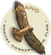

Having trouble viewing the geobrowser? Click here for help
Welcome to the Solano County Habitat Conservation Plan Geobrowser
The Solano County Habitat Conservation Plan (HCP), administered by the Solano County Water Agency, provides a framework for
promoting the conservation of biological diversity and the preservation of endangered species and their habitats consistent with the recognition of private
property rights; provides for a healthy economic environment for the citizens, agriculture, and industries; and allows for ongoing maintenance and operation
of public and private facilities in Solano County. The HCP also efficiently evaluates direct, indirect, and temporary impacts and mitigation requirements for Natural Communities, Covered Species, Special Management Species, and their habitats.
The HCP Geobrowser was developed with the goal of providing a simple way of understanding and visually processing the spatial data important to the implementation of the HCP.
The Geobrowser will aid applicants in determining preliminary requirements a proposed project will have based on its location in the Solano County Plan Area and potential impacts to Natural
Communities and Covered Species.
For more information: Solano HCP Executive Summary
All information provided in official Solano County Water Agency (SCWA) websites is provided for informational purposes only and does not
constitute a legal contract between the SCWA and any person or entity. Information on the websites is subject to change without prior notice. Although every reasonable
effort is made to present current and accurate information, the SCWA makes no guarantees of any kind.
SCWA does not assume any liability for any errors, omissions, or inaccuracies in the information provided
regardless of the cause of such or for any decision made, action taken, or action not taken by the user in reliance upon any data provided herein. The SCWA, its employees, officers, content providers, affiliates or other representatives are not liable for damages of any kind (including, without limitation, lost profits, direct,
indirect, compensatory, consequential, exemplary, special, incidental, or punitive damages) arising out of your use of, your inability to use, or the performance of this website or the content
whether or not we have been advised of the possibility of such damages.